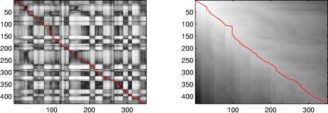

One of the difficulties in speech recognition is that although different recordings of the same words may include more or less the same sounds in the same order, the precise timing - the durations of each subword within the word - will not match. As a result, efforts to recognize words by matching them to templates will give inaccurate results if there is no temporal alignment.
Although it has been largely superseded by hidden Markov models, early speech recognizers used a dynamic-programming technique called Dynamic Time Warping (DTW) to accommodate differences in timing between sample words and templates. The basic principle is to allow a range of 'steps' in the space of (time frames in sample, time frames in template) and to find the path through that space that maximizes the local match between the aligned time frames, subject to the constraints implicit in the allowable steps. The total `similarity cost' found by this algorithm is a good indication of how well the sample and template match, which can be used to choose the best-matching template.
The code and example on this page show a simple implementation of dynamic time warp alignment between soundfiles. In addition to using this for scoring the similarity between sounds, we can also use it to `warp' a soundfile to match the timing of a reference, for instance to synchronize two utterances of the same words.
The routines provided here are:
An example use is shown below:
>> % Load two speech waveforms of the same utterance (from TIMIT)
>> [d1,sr] = wavread('sm1_cln.wav');
>> [d2,sr] = wavread('sm2_cln.wav');
>>
>> % Listen to them together:
>> ml = min(length(d1),length(d2));
>> soundsc(d1(1:ml)+d2(1:ml),sr)
>> % or, in stereo
>> soundsc([d1(1:ml),d2(1:ml)],sr)
>>
>> % Calculate STFT features for both sounds (25% window overlap)
>> D1 = specgram(d1,512,sr,512,384);
>> D2 = specgram(d2,512,sr,512,384);
>>
>> % Construct the 'local match' scores matrix as the cosine distance
>> % between the STFT magnitudes
>> SM = simmx(abs(D1),abs(D2));
>> % Look at it:
>> subplot(121)
>> imagesc(SM)
>> colormap(1-gray)
>> % You can see a dark stripe (high similarity values) approximately
>> % down the leading diagonal.
>>
>> % Use dynamic programming to find the lowest-cost path between the
>> % opposite corners of the cost matrix
>> % Note that we use 1-SM because dp will find the *lowest* total cost
>> [p,q,C] = dp(1-SM);
>> % Overlay the path on the local similarity matrix
>> hold on; plot(q,p,'r'); hold off
>> % Path visibly follows the dark stripe
>>
>> % Plot the minimum-cost-to-this point matrix too
>> subplot(122)
>> imagesc(C)
>> hold on; plot(q,p,'r'); hold off

>>
>> % Bottom right corner of C gives cost of minimum-cost alignment of the two
>> C(size(C,1),size(C,2))
ans =
128.2873
>> % This is the value we would compare between different
>> % templates if we were doing classification.
>>
>> % Calculate the frames in D2 that are indicated to match each frame
>> % in D1, so we can resynthesize a warped, aligned version
>> D2i1 = zeros(1, size(D1,2));
>> for i = 1:length(D2i1); D2i1(i) = q(min(find(p >= i))); end
>> % Phase-vocoder interpolate D2's STFT under the time warp
>> D2x = pvsample(D2, D2i1-1, 128);
>> % Invert it back to time domain
>> d2x = istft(D2x, 512, 512, 128);
>>
>> % Listen to the results
>> % Warped version alone
>> soundsc(d2x,sr)
>> % Warped version added to original target (have to fine-tune length)
>> d2x = resize(d2x', length(d1),1);
>> soundsc(d1+d2x,sr)
>> % .. and in stereo
>> soundsc([d1,d2x],sr)
>> % Compare to unwarped pair:
>> soundsc([d1(1:ml),d2(1:ml)],sr)
If you find this code useful and wish to reference it in your publications, you can make a reference directly to this web page, e.g. something like:
The code originated with our project on aligning MIDI descriptions to music audio recordings,
This software is released under GPL. See the COPYRIGHT file.
Last updated: $Date: 2007-06-24 10:44:07 $